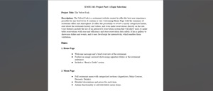

Assignments
Assignment 1 - Basic HTML
For this assignment, I created a webpage using HTML. The website, which is about the California wildfires, features images, paragraphs and a table.

Assignment 2 - Basic CSS
For this assignment, I created another webpage using Visual Studio Code. For this page, I used my new knowledge of CSS design to amplify the appearance. My topic was Interesting Global Festivals.

Assignment 3 - Project Layout
For this assignment, I was tasked with re-creating a webpage using HTML and CSS to mimic a picture provided by my professor. I learned how to use flexbots and media queries to make my website easier to navigate on mobile devices.
Assignment 4 - Recreate CSS Page
For this assignment, I was tasked with re-creating a webpage using HTML and CSS to mimic the UofSC college of Arts and Science homepage.

Assignment 5 - Introduction to JavaScript
For this assignment, we used JavaScript to add elements to a HTML/CSS Page.
Assignment 6 - If Statements
For this assignment, I used JavaScript to bring to life a page designed by my progessor.

Projects
Part 1 - Basic Topic Selection
For this assignment, I created a webpage using HTML. The website, which is about the California wildfires, features images, paragraphs and a table.
Part 2 - Wireframe
For this assignment, I created a wireframe for my website using MockItt. I outlined each page and animation.
Part 3 - HTML and CSS
For this assignment, I used my wireframe from Part 2 to create a basic site using HTML and CSS.